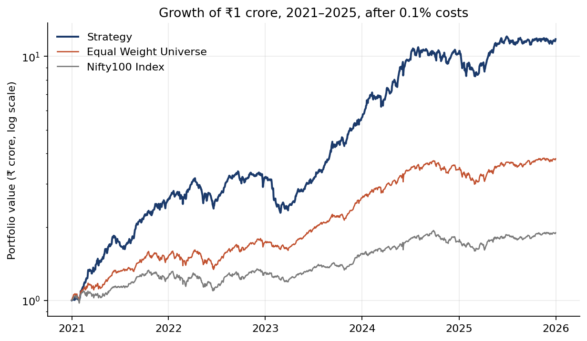
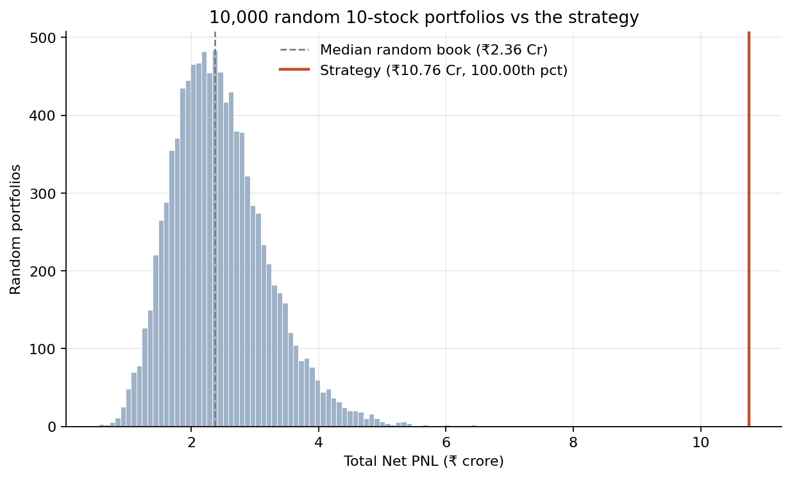
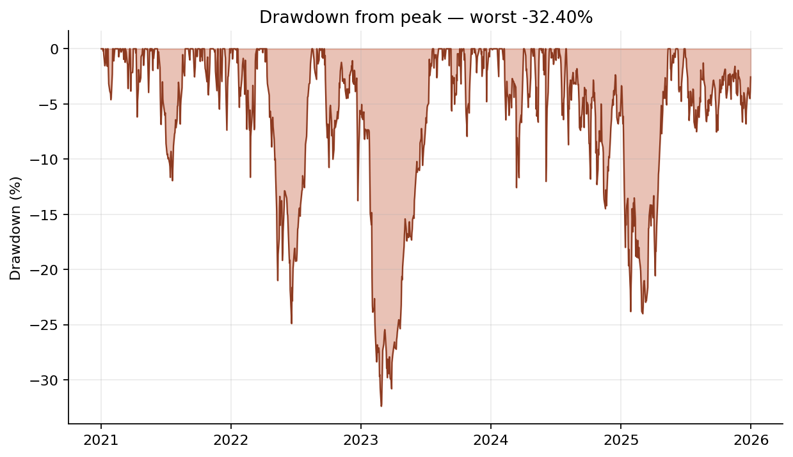

Finesse × Citadel Portfolio Construction Challenge · Round 2 · Jury round
Momentum, measured against luck
A 12-1 momentum book of 10 stocks from the Nifty 100 and Nifty Midcap 100, rebalanced monthly, 1 Jan 2021 to 31 Dec 2025.
The strategy
One ranking, ten names, equal weight, every month
Today's Nifty 100 + Midcap 100 (200 names, as mandated). A stock needs a full year of prices and must have traded the day before. 174–192 eligible.
Return from 252 to 21 trading days ago, using closes through yesterday. The most recent month is skipped.
One ranking across both indices. Ties go to the stock already held. No optimiser.
Buy at the next open, reset to 10% each on the first trading day of every month. 60 rebalances, 0.1% on every trade.
Why momentum, and why this simple
- The best-documented price anomaly: investors under-react to news, so trends persist for 3–12 months.
- It needs only prices, and it is one ranking with nothing to estimate. The 12-1 lookback is the published convention, not fitted.
- The score is raw PNL, so we built for return and excluded risk overlays in writing before building anything.
- Benchmarks: equal-weight universe +280.6%, Nifty 100 +89.4%.
Data preparation
Clean prices first: splits, demergers and one fake trading day
Source and calendar
- Yahoo Finance daily OHLCV, Jun 2019 – Aug 2026. The 18-month lead-in feeds the first 252-day lookback.
- 1,786 trading days. Removed 4 fake holiday bars with zero volume everywhere; kept 2 real Diwali Muhurat sessions.
- 2025-03-18 removed: 191 of 193 closes unchanged from the day before. One stale row shifted every lookback after it and halved a stress result.
- Snapshots are pinned and never overwritten. Stocks are keyed by ISIN, because tickers get renamed (Zomato → ETERNAL).
Splits and bonuses
We checked all 79 splits across 61 stocks. Yahoo adjusts history only back to 1 January of the split year, so three showed false crashes:
| Stock | Action | Before | Fixed |
|---|---|---|---|
| MOTILALOFS | 3:1 bonus, Jun 2024 | −74.6% | +1.55% |
| CONCOR | 1:4 bonus, Jul 2025 | −20.9% | −1.10% |
| TRENT | 1:2 bonus, Jun 2026 | −33.0% | +0.43% |
Each ratio is confirmed by NSE's corporate-action record and by exchange closes matching to four decimals.
Demergers: sell before the ex-date
TMPV (Oct 2025, −40.2%) and VEDL (Apr 2026, −64.9%) fell because holders received shares in a new company. NSE publishes no ratio to adjust for it, so we don't invent one.
- Rule: sell at the open of the last session before the ex-date; hold the cash until the next rebalance.
- The off-by-one matters: VEDL closed at 773.60 and opened at 289.50 on the ex-date. Selling on the ex-date gave +1.8% in the test window; one session earlier gave +8.6%.
- The same rule applies to all 10,000 random portfolios.
Other rules: a stock is buyable only if it traded the day before · moves above ±20% are flagged, never smoothed · gaps are filled forward for at most 5 days and never backwards (it never fires) · new listings wait a full year (26 names) · price return only, which understates a dividend-reinvesting book by about 9 pp but barely changes the ranking (ρ 0.99)
Variants tried
We tried to beat the simple rule 58 times. Nothing did.
Each slate was written down with its predictions before it ran, then scored against a band of 10,000 random portfolios drawn in advance. Failed predictions are recorded as failed.
| Slate | Runs | Why we tried it | What happened | Verdict |
|---|---|---|---|---|
| Rebalance frequency × weighting quarterly / monthly / weekly / daily × reset / drift | 8 | Holding period had never been tested, and resetting to 1/10 might “sell the winners”. | Monthly + reset: +₹2.00 Cr over quarterly (+2.32σ). Reset beats drift at every frequency. | Adopted |
| Lookback × skip 126 / 189 / 252 days × skip 0 / 21 | 6 | 12-1 came from the literature and had never been checked. | 252/21 is the best of all six. A challenger had to win by more than 1σ. | Kept 12-1 |
| Add Nifty Smallcap 100 299 names instead of 200 | 2 | The rules allow it, and our backlog called it “the largest lever”. | The universe got better (+18.6 pp); the strategy got worse by ₹4.39 Cr (−5.1σ). | Rejected |
| Composite signal momentum + steadiness of the rise + distance from 52-week high; rank buffer; residual momentum | 4 | Add how a stock rose and where it sits, using one feature per concept chosen from a correlation study with no PNL. | All four lose by 5.15σ to 7.49σ. Sharpe and drawdown both get worse too. | Rejected |
| Composite feature weights 7 weight vectors × 6 frames | 42 | Two weight vectors cannot judge a whole axis. | 0 of 42 beat the baseline. 0 reached +1σ, where luck alone predicts about 7. | Rejected |
Screened but not run: conviction weighting, sector caps, a tree ensemble and a regime overlay. Slide 5 gives the reasons. All 63 runs, losers included: output/report/configurations.md
Why this variant
Monthly, reset to 1/10, and nothing else added
The bar every change had to clear
10,000 random 10-stock portfolios use the same universe, dates, costs and engine. Only the stock picks differ, so their spread is pure luck. If a change moves PNL by less than one σ of that spread, nothing was found.
The selection rule was fixed before each grid ran: highest 2021–25 PNL wins. The 2026 window is used only to reject a candidate, never to choose one.
| PNL ₹ Cr | reset | drift | Sharpe |
|---|---|---|---|
| quarterly | 8.76 | 8.64 | 2.21 |
| monthly | 10.76 | 9.49 | 2.42 |
| weekly | 9.99 | 8.49 | 2.33 |
| daily | 9.29 | 8.68 | 2.26 |
Why monthly
- +₹2.00 Cr over quarterly, +2.32σ on a fixed ruler.
- It isn't bought with risk: Sharpe rises 2.21 → 2.42 and max drawdown is flat at −32%.
- Return per unit of risk against random books rises from the 63rd to the 96th percentile. Monthly picks better, not just bigger.
- The effect is an inverted U. Faster than monthly trades noise at the rank-10 boundary, and daily pays ₹88.7 L in costs.
- Why reset: it beats drift at all four frequencies. Topping losers back up to 1/10 is cheap when the holdings are recent winners.
Why nothing else was added
| Momentum rank | Next-quarter return |
|---|---|
| 1–10 | +9.56% |
| 11–20 | +5.14% |
| 21–30 | +6.03% |
| 101+ | +4.19% |
Point-in-time universe, quarterly, 20 dates (docs/NOTES.md N7).
- Payoff is a cliff at rank 10. Extra features or extra names push picks over it, which is why every add-on lost.
- Inside the top 10, return is flat in rank (Spearman +0.01), so equal weight: there is no ordering to tilt towards.
- No optimiser: a 10-name covariance matrix is mostly noise. No overlay: cash days cost score.
Results · 1 of 2
₹1 Cr became ₹11.76 Cr, ahead of both benchmarks every year

Log scale. Same engine, dates and costs for the strategy and the equal-weight universe.
| Benchmark | Return | Net PNL |
|---|---|---|
| Strategy | +1,076.5% | ₹10.76 Cr |
| Equal-weight universe (same 200 names, pays costs) | +280.6% | ₹2.81 Cr |
| Nifty 100 index (cost-free) | +89.4% | ₹0.89 Cr |
| Year | Strategy | Eq-wt | Nifty 100 |
|---|---|---|---|
| 2021 | +160.3% | +50.3% | +25.0% |
| 2022 | +22.2% | +14.2% | +3.6% |
| 2023 | +74.3% | +52.0% | +20.0% |
| 2024 | +86.4% | +31.0% | +11.8% |
| 2025 | +13.7% | +10.6% | +9.0% |
The equal-weight universe is the fair bar. It separates picking stocks from simply being invested in a rising market. Against it the strategy is +796 pp; against the index, +987 pp.
Results · 2 of 2
Not luck, not just risk, and the metrics defined

0 of 10,000 random books beat it (+11.1σ). Best random draw ₹6.48 Cr. 96th percentile on return per unit of risk.

Worst: 20 Sep 2022 → 27 Feb 2023, recovered 21 Jul 2023.
| Metric | Value | How it is defined |
|---|---|---|
| Total Net PNL | ₹10.76 Cr | Final value − ₹1 Cr, after every cost including the first purchase |
| CAGR | 63.78% | Geometric, over calendar days ÷ 365.25 |
| Sharpe | 2.42 | CAGR ÷ (daily σ × √252), risk-free 0. The guideline formula omits √252, which inflates it about 16×; we show both |
| Max drawdown | −32.40% | Peak to trough on daily portfolio value, after costs |
| Accuracy | 62.5% | Round trips (entry to exit) that made money. Only 48.8% beat the benchmark over the same dates, so this is not proof of skill |
| Gain-to-loss | 2.01 | Average winning trip ÷ average losing trip. Total gains ÷ total losses: 3.35 |
| Trades · turnover | 168 · 7.36× | Round trips over 83 names (2.02 each), 758 fills · traded value ÷ NAV, annualised |
Liquidity
99% of the 758 fills are under 1.82% of that stock's 20-day average daily volume. The median is near zero. Market impact is negligible at ₹1 Cr.
2026 out of sample
Fresh ₹1 Cr in H1 2026: +7.60% against the Nifty 100's −6.65%, at the 88.9th percentile of a fresh band. Used only to reject, never to choose.
Caveat · 1 of 2
The mandated universe looks forward. We measured by how much.
1 · Index inclusion
A stock is in today's Nifty 100 partly because it rose over 2021–25. We pick winners from a list already filtered for winning.
2 · Survivorship
Names that fell out of the indices are absent, so the strategy is never offered them and can never be caught holding one.
How we measured it
We rebuilt historical membership from 27 NSE index-review press releases (43 changes, found by sweeping 976 PDFs). We walked today's list backwards and checked at every step that each index stays at 100 names, added names are present and removed names are absent. One config switch runs either universe.
| Same rule, same engine | Today's lists | As of each date | Gap |
|---|---|---|---|
| Quarterly baseline | +876.5% | +388.0% | 488 pp |
| Submitted (monthly) | +1,076.5% | +414.4% | 662 pp |
| Equal-weight universe | +284.9% | +151.6% | 133 pp |
| Random books beating baseline | 0 / 10,000 | 4 / 10,000 |
More than half the headline comes from the universe, not the rule.
The edge over the strategy's own universe still survives: +236 pp, beating 9,996 of 10,000 random books, at the 74th percentile per unit of risk.
What is not forward-looking
- The signal uses closes through yesterday; trades fill at today's open.
- A test scrambles every price from the rebalance date onward and requires the same 10 picks.
- A second test scrambles the lookback window and requires the picks to change, which shows the first test isn't empty.
- Tradeability is judged on yesterday's volume, never today's.
Residual: 6 former members have no usable price history (DHANI, GSPL, HDFC, ISEC, MINDTREE, PEL) and are excluded.
Caveat · 2 of 2
Built to maximise the score. Here is the risk that buys.
Risks we accepted on purpose
- −32.4% drawdown, no stop-loss, always fully invested.
- Concentration: 10 names at 10% each. Volatility 31.8% against 18.7% for the median random book.
- Themes: Adani names in 2021–22, PSU banks in 2023, rail, defence and power PSUs in 2024–25.
- One regime: 2021 alone returned +160%. The 2026 test covers only six months.
Risks we controlled
- Look-ahead: causal signal with tests (slide 8).
- Cash: costs are reserved up front, so cash can never go negative. The trade log reconciles to the NAV within ₹1 on every run.
- Liquidity: 99% of fills are under 1.82% of daily volume.
- Corporate actions: exit before demergers; whole shares only.
Worst episode: Jan–Feb 2023
The book held ADANIENT, ADANIPOWER and ATGL when the short-seller report landed on 24 Jan 2023. At the 1 Feb rebalance it kept all three and topped them back up to 10%, because the skipped month hid the crash from the signal.
The portfolio fell 26.7% from 24 Jan to 28 Feb. ADANIENT and ATGL left the book on 1 Mar.
Why we didn't patch it: a filter fitted to one known event would be overfitting. Dropping the skip month changes five-year PNL by only −0.17σ.
Computed from output/sweep/monthly_reset holdings and NAV.
What a live book would add
| Concern | Live book |
|---|---|
| Drawdown | Position limits, a drawdown circuit-breaker or a volatility target |
| Concentration | Sector and group caps, more names |
| Costs | STT, stamp duty, exchange fees, GST and slippage modelled separately |
| Signal | Several factors; watch for crowding |
| Regime | Momentum crashes on sharp reversals; some regime awareness |
Also: price return only (dividends ≈ 9 pp), Yahoo data, demergers exited rather than adjusted.
Conclusion
A simple rule, tested hard, with its limits measured
01 · The rule
12-1 momentum, top 10, equal weight, monthly.
₹10.76 Cr net PNL. Beats all 10,000 random portfolios and sits at the 96th percentile per unit of risk. No fitted parameter.
02 · The evidence
59 configurations, all pre-registered. The simplest won.
Frequency was the only lever that paid. The textbook lookback won its own sweep. Every loser is published with its failed predictions.
03 · The honesty
We measured the caveats instead of leaving them to you.
488–662 pp of universe bias, a −32% drawdown and one market regime, all quantified and reproducible from the repo.
With more time
A matched null band (perturbing our own rule, not random books) · inverse-volatility weighting for Sharpe · a full Indian cost model · regime sub-period tests inside 2021–25
Thank you
Questions?
[Team name] · [Member names]
github.com/jashD11/finesseXcitadel
Check it yourself
- pytest tests/: 125 tests for causality, accounting, cleaning and selection.
- The headline from scratch takes about 6 minutes and prints ₹107,649,806.
- Every run: output/report/configurations.md
- Every decision (61): docs/DECISIONS.md
Backup, if asked
Adani detail · year-by-year attribution · 2026 by variant · why reset vs drift flips with the universe · the Sharpe formula · reproduction commands